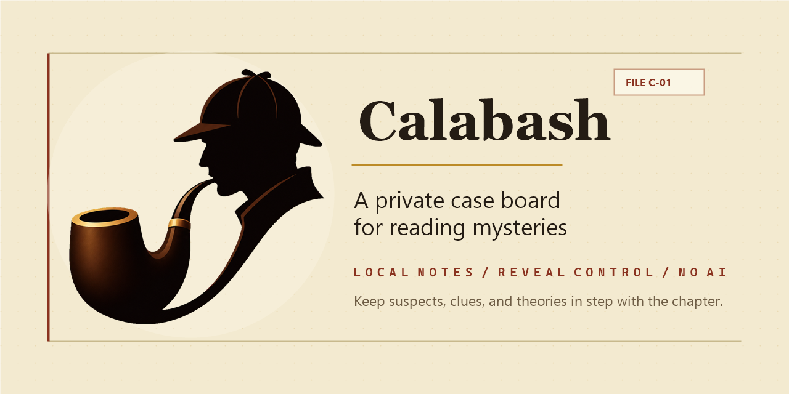

01 — TypeScript · MIT
Calabash
A spoiler-safe case board for mystery and detective fiction readers. Track characters, clues, aliases, relationships, and theories as you read — without the app ever giving away what comes next.
View on GitHub